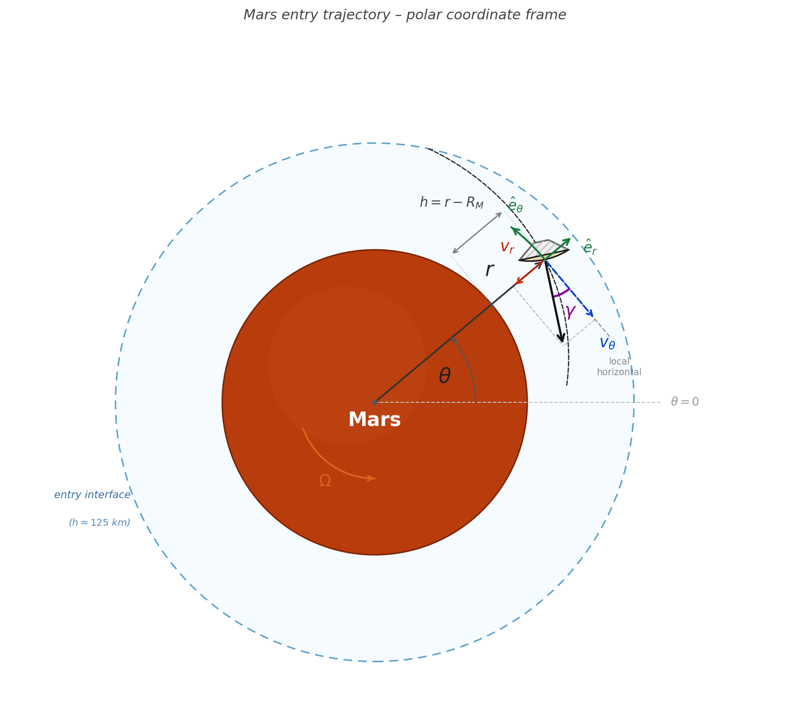
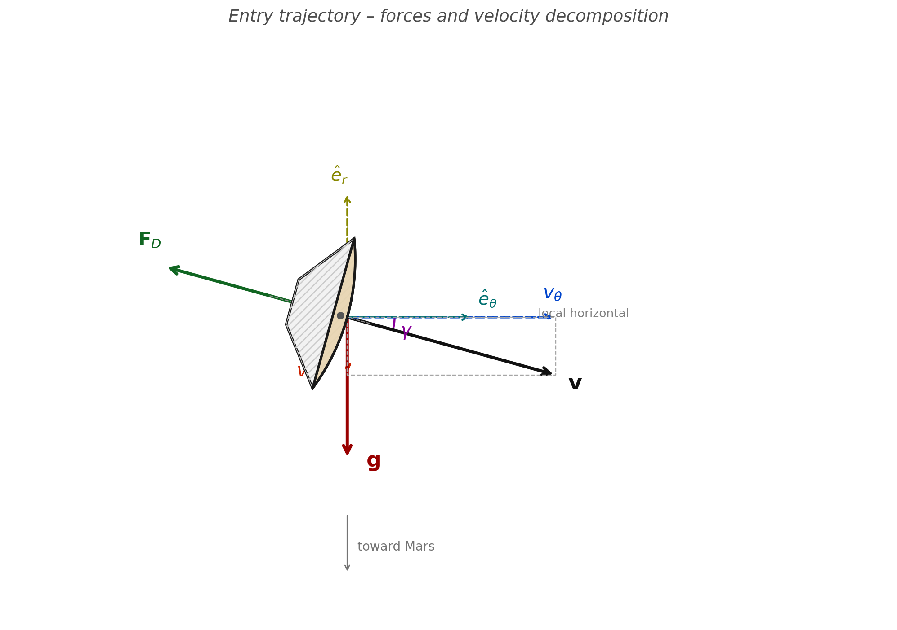
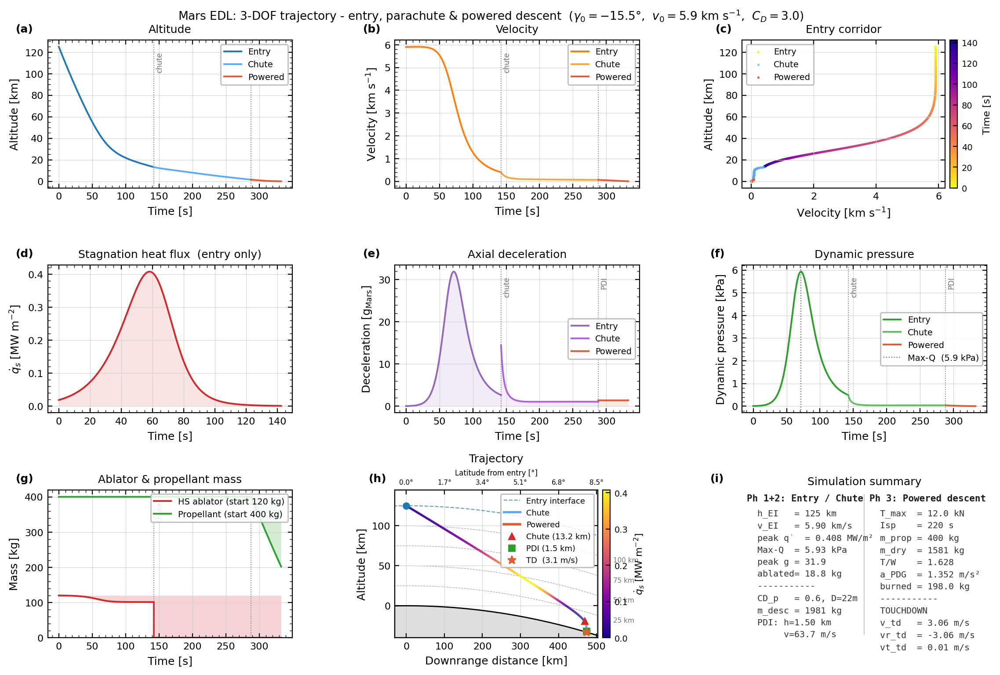

The seven minutes of terror - simulating mars reentry
2026-03-04 12:40:32
You can find the simulation code on GitHub.
Introduction
the world currently seems to be on fire and I'm bored at home, which is the perfect recipe for a new fun project: here is how I implemented a 3-DOF Mars entry, descent, and landing (EDL) trajectory simulator from scratch, covering the hypersonic entry phase with rotating frame dynamics, Sutton-Graves heating, ablation and final desent and landing on the martian surface .
Mars EDL - Entry, Descent, and Landing - is arguably the most demanding phase of any Mars mission. With no ocean to splash down in, no runway to land on, and an atmosphere 170 times thinner than Earth's, a spacecraft arriving from interplanetary space must decelerate from roughly 6 km/s to a full stop in a matter of minutes.
NASA engineers famously called this the "seven minutes of terror": the time from atmospheric entry to surface touchdown during which the spacecraft operates entirely autonomously - signal delay from Earth makes any human intervention impossible.
What is EDL?
EDL stands for Entry, Descent, and Landing. The entry interface - the point where the atmosphere becomes meaningful - is defined at 125 km altitude for Mars. There's no thrust during the heating phase - just the heat shield absorbing the energy that would otherwise vaporise the vehicle.
The sequence for MSL (the Curiosity mission) goes: hypersonic entry → peak heating → Max-Q → parachute deployment at ~15 km → powered descent → skycrane → touchdown. This simulation now covers all three phases - hypersonic entry, parachute descent, and powered descent - using the same 3-DOF polar coordinate framework throughout, with appropriate force models added for each phase.
Phase 1 models hypersonic entry with aeroshell drag, aerodynamic heating, and heat shield ablation. Phase 2 models supersonic parachute descent from chute deployment down to Powered Descent Initiation (PDI) at 1.5 km. Phase 3 models powered descent from PDI to touchdown using a constant-deceleration PDG (Powered Descent Guidance) law with proportional feedback - a simplified version of the algorithms flown on real Mars landers.
What is 3-DOF?
A 3-DOF model tracks three independent dynamic variables. In this simulation, the state vector in the rotating Mars frame is:
where:
r = radial distance from Mars center (m)
θ = downrange angular position (rad)
v_r = radial (vertical) velocity component (m/s)
v_θ = tangential (horizontal) velocity component (m/s)
m_hs = heat shield mass (kg, decreasing due to ablation)
We do not model roll, pitch, or yaw - those are attitude degrees of freedom (a 6-DOF problem). The capsule is assumed to fly at a fixed aerodynamic orientation (zero angle of attack), which is valid for a blunt-body capsule like MSL during the hypersonic phase.
Reference Frame and Coordinate System
The simulation uses a 2D (in-plane) polar coordinate system fixed to the rotating Mars surface. This is physically realistic because the landing site rotates with the planet, and the Coriolis effect due to Mars's rotation is non-negligible over the entry duration.
Inertial vs. Rotating Frame
An inertial (non-rotating) frame is the simplest for writing Newton's laws - there are no fictitious forces. However, since we care about where the capsule lands relative to a surface target, it's more useful to work in the rotating frame, where the surface is stationary.
Transforming Newton's second law into a rotating frame introduces two fictitious accelerations:
- Coriolis acceleration: \(+2\boldsymbol{\Omega} \times \mathbf{v}\) - appears because velocity in the rotating frame differs from the inertial velocity.
- Centrifugal acceleration: \(+\Omega^2 r\) - appears because the rotating frame itself is accelerating outward.
Here \(\Omega = 7.088 \times 10^{-5}\) rad/s is Mars's rotation rate (sidereal day of ~24.62 hours).
Polar Coordinates
The position of the capsule is described by \((r, \theta)\), where \(r\) is the distance from Mars's center and \(\theta\) is the angular displacement downrange from the entry point. Velocities are resolved as:
The flight path angle \(\gamma\) at any instant can be recovered from:


Equations of Motion
The equations of motion in the rotating polar frame are derived by applying Newton's second law with gravity, drag, Coriolis, and centrifugal forces. The result is a system of five coupled first-order ODEs:
The first two equations are pure kinematics - the rate of change of position equals the velocity components. The velocity dynamics include every force acting on the vehicle:
| Term | Expression | Physical meaning |
|---|---|---|
| Centripetal | \(v_\theta^2 / r\) | Inertial tendency of tangential motion to push outward |
| Gravity | \(-\mu / r^2\) | Mars gravitational attraction (\(\mu = 4.28 \times 10^{13}\) m³/s²) |
| Drag (radial) | \(F_{D,r} / m\) | Drag component opposing radial motion |
| Coriolis (radial) | \(+2\Omega v_\theta\) | Fictitious: tangential motion creates apparent radial push |
| Centrifugal | \(+\Omega^2 r\) | Fictitious outward push from the rotating frame |
| Curvature (tangential) | \(-v_r v_\theta / r\) | Geometric coupling: descending while moving tangentially |
| Drag (tangential) | \(F_{D,\theta} / m\) | Drag component opposing tangential motion |
| Coriolis (tangential) | \(-2\Omega v_r\) | Fictitious: radial motion deflects tangential velocity |
The last equation couples the aerothermal environment back into the vehicle mass, making the system non-conservative. Ablation reduces \(m_{hs}\), which reduces total vehicle mass, which changes the drag deceleration.
Drag Force
The aerodynamic drag force is modeled using the standard drag equation:
where \(\rho\) is local atmospheric density, \(v = \sqrt{v_r^2 + v_\theta^2}\) is speed, \(C_D\) is the drag coefficient for a 70° sphere-cone (MSL geometry), and \(A_{ref}\) is the reference area (capsule cross-section, \(D = 4.5\) m). The force vector opposes velocity, so its components are:
Mars Atmosphere Model
The Martian atmosphere is composed primarily of CO₂ (~95%) with trace amounts of nitrogen and argon. Its surface pressure is only ~600 Pa - less than 1% of Earth's - making it simultaneously thin enough to complicate parachute deployment and dense enough at lower altitudes to generate intense aerodynamic heating.
Unlike Earth, Mars has no well-established analogue to the US Standard Atmosphere with distinct temperature layers. Instead, a single-exponential model is used, based on the Justus & Braun (2007) engineering model:
with \(\rho_0 = 0.020\) kg/m³ (surface reference density) and \(H = 11{,}100\) m (atmospheric scale height). The scale height arises physically from the hydrostatic balance and ideal gas law: \(H = R_{\text{specific}} T / g\), where \(T \approx 210\) K is the mean atmospheric temperature on Mars.
Earth vs. Mars - A Comparison
| Property | Earth | Mars |
|---|---|---|
| Surface pressure | 101,325 Pa | ~636 Pa |
| Surface density | 1.225 kg/m³ | ~0.020 kg/m³ |
| Scale height | ~8,500 m | ~11,100 m |
| Main composition | N₂ / O₂ | CO₂ (~95%) |
| Entry interface | ~120 km | ~125 km |
The thinner Mars atmosphere means that for the same entry speed, the capsule spends more time at high velocities before adequate deceleration is achieved - hence the need for precise entry angles, and why the parachute alone isn't enough without powered descent.
Aerodynamic Heating - Sutton-Graves
When a body enters an atmosphere at hypersonic speeds, kinetic energy is converted into thermal energy through bow-shock compression. A small fraction of this energy is transferred to the vehicle surface as heat flux. The most severe heating occurs at the stagnation point - the forward-facing center of the heat shield where flow is brought to rest.
Physical Mechanism
At hypersonic velocities, air molecules in front of the capsule cannot get out of the way fast enough. A detached bow shock forms ahead of the vehicle. Behind the shock, the gas is compressed and heated to temperatures exceeding 10,000 K - hotter than the surface of the Sun. This hot gas boundary layer then transfers heat to the vehicle via convection.
The Sutton-Graves Equation
The stagnation-point convective heat flux is given by the semi-empirical Sutton-Graves relation:
where \(k\) is the Sutton-Graves constant (specific to the atmosphere's gas composition), \(\rho\) is local atmospheric density, \(R_n \) is the nose radius (larger nose → less heating), and \(v\) is vehicle speed. For Mars's CO₂-dominated atmosphere:
For comparison, \(k_{\text{Earth}} \approx 1.7415 \times 10^{-4}\) in the same units. The slightly higher value for Mars reflects the different thermodynamic properties of CO₂.
Why \(v^3\)?
The cubic dependence on velocity is the most important feature of this equation. Doubling entry speed increases heat flux by a factor of 8. This is why even a shallow trajectory optimisation that reduces peak velocity by 10% can halve the peak heating, and why the entry corridor - the range of acceptable flight path angles - is so narrow.
The \(\sqrt{\rho}\) term explains why peak heating does not occur at entry interface (where \(v\) is maximum but \(\rho \approx 0\)) or at the surface (where \(\rho\) is maximum but \(v \approx 0\)). Peak heating occurs at intermediate altitude, where the product \(\rho \cdot v^6\) is maximised.
The simulator outputs peak heat flux, time and altitude of peak heating, and speed at peak heating for any set of input parameters. For an MSL-like entry (steep angle, high speed, large blunt body), the peak stagnation flux lands in the hundreds of kW/m² to low MW/m² range - consistent with the ~0.8 MW/m² measured on Curiosity, with the exact value depending strongly on entry speed, flight path angle, and nose radius.
Heat Shield Ablation
The function of the heat shield is to absorb and re-radiate or carry away the enormous heat load of entry. Modern heat shields use ablative thermal protection systems (TPS) - materials that char, decompose, and erode, carrying energy away in the process.
PICA - the MSL TPS Material
The Mars Science Laboratory used Phenolic Impregnated Carbon Ablator (PICA) as its TPS material. PICA pyrolyzes at high temperatures: the polymer binder decomposes, injecting gases into the boundary layer (which reduces heat transfer - a phenomenon called "blowing"), while leaving behind a low-density carbonized char layer that insulates the underlying structure.
Ablation Energy Balance
The mass loss rate of the heat shield is modeled via a simple energy balance at the stagnation point. The rate at which mass is ablated equals the incoming heat power divided by the specific ablation enthalpy:
where \(A_{hs} = 15.9\) m² is the heat shield area (same as \(A_{ref}\) for a blunt body), \(H_{abl} = 1.5 \times 10^7\) J/kg is the effective ablation enthalpy of PICA-like material, and \(m_{hs}\) is initialized at 120 kg. The ablation enthalpy lumps together pyrolysis, sublimation, and gas injection - it's an effective value, not a single-process constant.
Coupling to Dynamics
Ablation couples back to the trajectory through vehicle mass. As the heat shield erodes, total vehicle mass decreases:
Since drag deceleration scales as \(F_{drag}/m\), a lighter vehicle decelerates faster. This is a coupled thermo-mechanical effect: heating causes ablation, ablation reduces mass, reduced mass changes the deceleration profile.
There is a counterintuitive result buried in this coupling: a higher drag coefficient actually reduces total ablation. The mechanism is straightforward - higher \(C_D\) means the vehicle decelerates more aggressively, but at higher altitude where the atmosphere is exponentially thinner. Peak heat flux occurs where \(\rho v^3\) is maximised; if deceleration happens earlier at higher \(h\) (lower \(\rho\)), the vehicle arrives at the density-rich lower atmosphere already slow, so the \(v^3\) term is far smaller by the time \(\rho\) is large enough to matter. The net result is a lower peak \(\dot{q}_s\) and less integrated heat load. This is part of why blunt-body aeroshells with high \(C_D\) are thermally favourable - the aerodynamic inefficiency is a feature, not a bug.
The fraction of the heat shield ablated depends heavily on the integrated heat load - which in turn depends on entry speed, angle, and \(C_D\). A shallower entry angle or a larger nose radius will spread the heating out and reduce peak ablation rate, while a steeper, faster entry can ablate a much larger fraction of the shield. The simulator tracks this in real time so you can see exactly how sensitive the ablation is to each parameter.
Numerical Integration - Runge-Kutta 45
The five ODEs form a coupled initial value problem (IVP) that cannot be solved analytically. The solver is scipy.integrate.solve_ivp with the RK45 method (Dormand-Prince pair).
Why RK45?
The Runge-Kutta 4(5) method is an adaptive, explicit method that uses a 4th-order solution for integration and a 5th-order solution for error estimation. At each step, it:
- Proposes a step size \(h\)
- Computes six function evaluations (the slopes \(k_1\) through \(k_6\))
- Forms both a 4th-order and 5th-order estimate of the solution
- Compares them to estimate local truncation error
- Accepts or rejects the step and adjusts \(h\) accordingly
This is ideal for our problem because the dynamics vary enormously over the entry - the solution is nearly inert at entry interface but becomes stiff (rapidly changing) during peak heating and deceleration. Adaptive step control automatically takes smaller steps through the high-heating phase and larger steps near the start.
Tolerances
These tight tolerances ensure that trajectory errors remain below 1 cm in position and 1 mm/s in velocity over the entire entry. Using loose tolerances (e.g., \(10^{-3}\)) would produce visible artifacts in the heat flux curve and incorrect peak heating values.
Event Detection
solve_ivp supports "events" - callable functions that trigger the integrator to stop (terminal events) or simply log a timestamp. Two terminal events are used:
- hit_ground: terminates when \(r < R_{\text{Mars}} + 10\) m (prevents integrating into the ground)
- supersonic_chute: terminates when \(v < 400\) m/s and \(h < 15\) km - approximate Mach 2 parachute deploy condition for Mars, analogous to MSL's supersonic parachute at Mach 2.2
The chute deploy event typically triggers somewhere in the 100–200 s range and several km altitude, depending on the entry parameters - steeper entries reach Mach 2 faster and higher, shallower ones take longer and come in lower.
Input Parameters
The simulator takes the following as inputs - all of which can be varied to explore different scenarios:
Entry State
| Parameter | Symbol | Notes |
|---|---|---|
| Entry altitude | \(h_{\text{entry}}\) | Typically 125 km for Mars (standard entry interface) |
| Entry speed | \(V_{\text{entry}}\) | Inertial speed at entry interface [m/s] |
| Flight path angle | \(\gamma\) | Angle below horizontal at entry. Negative = descending. Defines the steep/shallow tradeoff. |
| Entry mass | \(m_{\text{entry}}\) | Total vehicle mass at entry interface [kg] |
The entry speed and flight path angle are decomposed into the rotating-frame velocity components used by the integrator:
Vehicle and Aerodynamic Parameters
| Parameter | Symbol | Notes |
|---|---|---|
| Drag coefficient | \(C_D\) | Blunt-body capsules typically 1.5–1.7; directly sets deceleration rate |
| Capsule diameter | \(D\) | Sets the reference area \(A_{ref} = \pi(D/2)^2\) |
| Nose radius | \(R_n\) | Larger nose → lower peak heat flux (appears under the square root in Sutton-Graves) |
| Heat shield initial mass | \(m_{hs,0}\) | TPS mass available for ablation [kg] |
| Ablation enthalpy | \(H_{abl}\) | Energy absorbed per kg of material ablated; material-dependent [J/kg] |
Phase 2: Parachute Descent
Once the vehicle decelerates to roughly Mach 2 (v = 400 m/s at h < 15 km), the heat shield is jettisoned and a Disk-Gap-Band (DGB) supersonic parachute deploys. This architecture has been used on every successful Mars lander - Viking, Pathfinder, MER, Phoenix, MSL, and Perseverance all rely on a DGB chute to bridge the gap between hypersonic aeroshell entry and the low-speed regime where powered descent becomes practical.
DGB Parachute Model
The parachute is modeled as a constant drag-area device. The drag force has exactly the same form as the aeroshell but with the chute's own coefficient and reference area:
with \(C_{D,p} = 0.6\) and \(D_p = 21.5\) m giving \(A_p = \pi(D_p/2)^2 \approx 363\) m² (these numbers can be adjusted). The drag vector opposes velocity, so the component equations are identical to the aeroshell phase.
State Vector and Equations of Motion
Heat shield ablation is complete by the time the chute deploys, so the state vector drops to four variables - no mass change occurs during parachute descent:
The equations of motion are identical to Phase 1 (same Coriolis, centrifugal, and curvature terms) but with the chute drag area replacing the aeroshell area, and a fixed vehicle mass \(m_\mathrm{desc}\) - the combined mass of the descent stage plus lander minus the backshell that was jettisoned with the heat shield.
Termination: Powered Descent Initiation (PDI)
The parachute phase terminates at \(h = 1500\) m - the Powered Descent Initiation (PDI) altitude. At this point the backshell and chute are jettisoned and the powered descent engines ignite. PDI at 1.5 km is consistent with the MSL architecture; Perseverance used a similar altitude.
Phase 3: Powered Descent - PDG
From PDI at 1.5 km down to touchdown, the vehicle must decelerate from ~64 m/s to near-zero under rocket power alone - the atmosphere is too thin for drag to help meaningfully at this stage. This simulation implements a constant-deceleration PDG (Powered Descent Guidance) with proportional feedback: a computationally simple but physically motivated approach that guarantees a smooth, controlled descent profile and leaves propellant in the tanks at touchdown.
Constant-Deceleration Guidance Law
The idea is to compute at PDI the constant deceleration \(a_\mathrm{PDG}\) that would take the vehicle from its entry speed down to the target touchdown speed \(V_{td}\) over the available altitude:
From this, a kinematically consistent reference descent speed at any altitude \(h\) is:
Thrust is then split into a vertical component (feedforward gravity + deceleration, plus a proportional error term) and a small tangential component to bleed off residual horizontal speed:
where \(K_P = 3\) s⁻¹ is the proportional gain. The \((v_{r,\mathrm{tgt}} - v_r)\) error term corrects any deviation from the reference profile - if the vehicle is descending too fast, thrust increases; too slow, it decreases. Total thrust is clipped to \([0, T_\mathrm{max}]\) and the direction normalised. With \(T_\mathrm{max} = 12{,}000\) N and propellant budget \(m_p = 400\) kg, the vehicle reaches the surface at ~3 m/s with ~200 kg of propellant remaining.
Equations of Motion with Thrust
The state vector gains a fifth variable - propellant mass \(m_p\):
The thrust force components in the retrograde direction are:
These replace the drag terms in the \(\dot{v}_r\) and \(\dot{v}_\theta\) equations. Propellant is consumed via the standard rocket equation using specific impulse:
where \(I_{sp}\) is the specific impulse and \(g_0 = 9.80665\) m/s² (standard gravity - a conventional reference for specific impulse, not Mars gravity).
Why PDG Leaves Fuel at Touchdown
Unlike a pure gravity turn (which throttles at maximum until fuel is gone), the PDG controller throttles proportionally to the tracking error. Once the vehicle is riding the reference profile, the thrust required is exactly \(m(g + a_\mathrm{PDG})\) - which for Mars gravity and the chosen deceleration profile is well below \(T_\mathrm{max}\). Propellant consumption is therefore proportional to the actual manoeuvre energy, not the maximum available, so the vehicle arrives at the surface with roughly half its propellant budget intact.
Simulation Results
The simulator outputs all three phases in a single 9-panel figure: altitude and velocity histories, entry corridor (velocity vs. altitude), stagnation heat flux, axial g-load, dynamic pressure, heat shield ablation, the full curved-surface trajectory, and a summary table. An animated video shows the real-time trajectory sweep with live telemetry readouts including propellant remaining during Phase 3.

click me
Animated trajectory - velocity-coloured ground track with live telemetry
Physical Interpretation of the g-load Curve
The deceleration-time profile is characteristic of all blunt-body entries and falls into three distinct phases:
- Phase 1 - near-vacuum coast: Density is too low for significant drag. Essentially freefall; g-load near 0. Duration depends heavily on entry angle - shallower entries spend more time here.
- Phase 2 - heating phase: Rapid density increase drives exponential drag growth. Both peak heat flux and peak g-load occur here. Steeper entry angles compress this phase into a shorter, more intense pulse.
- Phase 3 - deceleration tail: Speed has dropped significantly. Despite denser atmosphere, lower \(v^2\) means drag and heating fall off quickly. The capsule coasts toward parachute deploy conditions.
The Entry Corridor
One of the most important constraints in EDL design is the entry corridor - the acceptable range of flight path angles at entry interface. Too steep, and the vehicle experiences excessive heating and g-loads (it "burns in"). Too shallow, and it bounces off the atmosphere and escapes back to space (it "skips out").
For Mars EDL, the entry corridor is typically only 2–3 degrees wide. MSL targeted −15.5° and achieved −15.4° - a remarkable navigation achievement after a 7-month interplanetary cruise. This is a direct consequence of the \(v^3\) dependence of heating: a small change in entry angle changes the velocity profile enough to push heat flux past material limits on one side, or insufficient deceleration on the other.
Limitations and Possible Extensions
Current Limitations
- 2D planar trajectory only - no cross-range motion, no bank-angle guidance (bank angles are how real EDL systems perform lateral steering).
- Zero angle of attack assumed - a real capsule has a non-zero trim angle to generate lift, enabling corridor widening and landing ellipse reduction.
- Exponential atmosphere - the real Mars atmosphere varies with season, latitude, longitude, and dust storm activity. Mission design uses full MOLA-based atmosphere models.
- Simple ablation model - the energy balance ignores radiative heat flux (significant above ~7 km/s), pyrolysis gas injection ("blowing"), and char layer thermal conduction.
- No skycrane - the simulation models direct touchdown. The actual MSL and Perseverance landing sequences use a skycrane - a hovering rocket platform that lowers the rover on cables. I didnt see the point in adding it since it'd just mean the powered descent would bring the vehicle to a hover at a higher altitude and then cables would be deployed. not the goal behind this project
- Constant parachute drag coefficient - real DGB chutes have a dynamic \(C_D\) that varies with Mach number, canopy inflation state, and oscillation. The constant-\(C_D\) model is a reasonable engineering average but doesn't capture transient inflation loads.
Possible Extensions
- Add lift force: \(F_L = \frac{1}{2}\rho v^2 C_L A_{ref}\), with \(C_L\) from aerodatabase tables - enables 3-DOF bank-angle guidance simulation.
- Add radiative heating: at speeds above ~6 km/s, radiation from the hot shock layer becomes the dominant heat flux mechanism. The Tauber-Sutton model adds this.
- Fuel-optimal guidance (G-FOLD): replace the constant-deceleration PDG with a convex-optimization-based guidance law that minimises propellant consumption while pinpointing a specific landing site - the class of algorithm flown on Perseverance.
- Full 6-DOF: add pitch, roll, yaw dynamics - required for modeling RCS thruster firings, bank-angle control, and skycrane separation mechanics.
Glossary
| Term | Definition |
|---|---|
| 3-DOF | Three Degrees of Freedom - position (\(r, \theta\)) and velocity (\(v_r, v_\theta\)) in 2D plane |
| Ablation | Thermal protection via material erosion - removes heat by carrying away hot gas |
| Blunt body | A vehicle shape with a large nose radius that creates a strong, stand-off bow shock, reducing surface heating |
| Centrifugal | Fictitious outward force in a rotating reference frame (\(= \Omega^2 r\)) |
| Coriolis | Fictitious force in a rotating frame arising from motion within that frame (\(= 2\boldsymbol{\Omega} \times \mathbf{v}\)) |
| Dynamic pressure | \(q = \frac{1}{2}\rho v^2\) - a measure of aerodynamic load intensity |
| EDL | Entry, Descent, and Landing - the full sequence from atmospheric entry to surface touchdown |
| Entry corridor | The range of flight path angles at entry interface that result in successful landing |
| Flight path angle | Angle between velocity vector and local horizontal. Negative = descending. |
| g-load | Vehicle deceleration expressed as multiples of gravitational acceleration |
| ODE | Ordinary Differential Equation - equations governing how the state evolves in time |
| PICA | Phenolic Impregnated Carbon Ablator - the TPS material used on MSL (Curiosity) |
| RK45 | Runge-Kutta 4(5) - an adaptive-step numerical integration method for ODEs |
| Scale height | Altitude over which atmospheric density drops by factor \(e \approx 2.718\). \(H = R_{\text{specific}} T / g\) |
| Stagnation point | The point on the vehicle where flow velocity is zero - maximum pressure and heating |
| Sutton-Graves | Semi-empirical equation for stagnation-point convective heat flux: \(\dot{q} = k\sqrt{\rho/R_n}\,v^3\) |
| TPS | Thermal Protection System - the heat shield and all insulation protecting the spacecraft |
| DGB | Disk-Gap-Band - the standard supersonic parachute design used on all Mars landers; named for its disk canopy, gap, and cylindrical band |
| PDI | Powered Descent Initiation - the altitude at which the parachute is jettisoned and the descent engines ignite |
| PDG | Powered Descent Guidance - a guidance law for the powered landing phase; this simulation uses a constant-deceleration profile with proportional feedback, a simplified precursor to the fuel-optimal G-FOLD algorithm |
| Isp | Specific impulse - a measure of propellant efficiency; \(I_{sp} = T / (\dot{m}\,g_0)\) in seconds. Higher Isp means more thrust per unit propellant consumed. |
| Skycrane | The landing system used on MSL and Perseverance: a hovering rocket stage that lowers the rover to the surface on cables, then flies away |